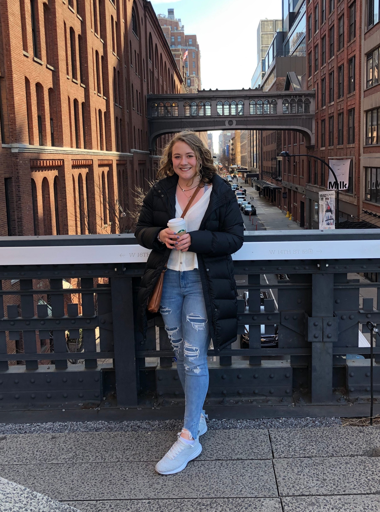

 Hello everyone! My name is Emily and I am a Junior at Cornell University. I am from Rochester, N.Y. but currently reside in Ithaca. I am studying Statistical Science with a minor in Computer Science. My main interests lie in the world of data science / analytics.
When I am not doing my schoolwork I like to be outside, hike, read, play volleyball and cook. I am lucky to live in Ithaca where the hiking trails are seemingly endless. My favorite genre of books to read is mystery and horror but I will pick up pretty much anything when I'm looking for a new book. Some of my most recent favorites have been The Woman in the Window by A.J. Finn and Pet Sematary by Stephen King. I am a vegetarian and I cook a wide variety of dishes. I've also been attempting to perfect my bread but it takes a little practice.
This summer I will be interning as a Decision Analytics Associate at a healthcare consulting company. I'm super excited to learn all I can and spend the summer in Philadelphia.
Feel free to explore my other pages (resume, hobbies and one devoted to my dog). Thanks for visiting!